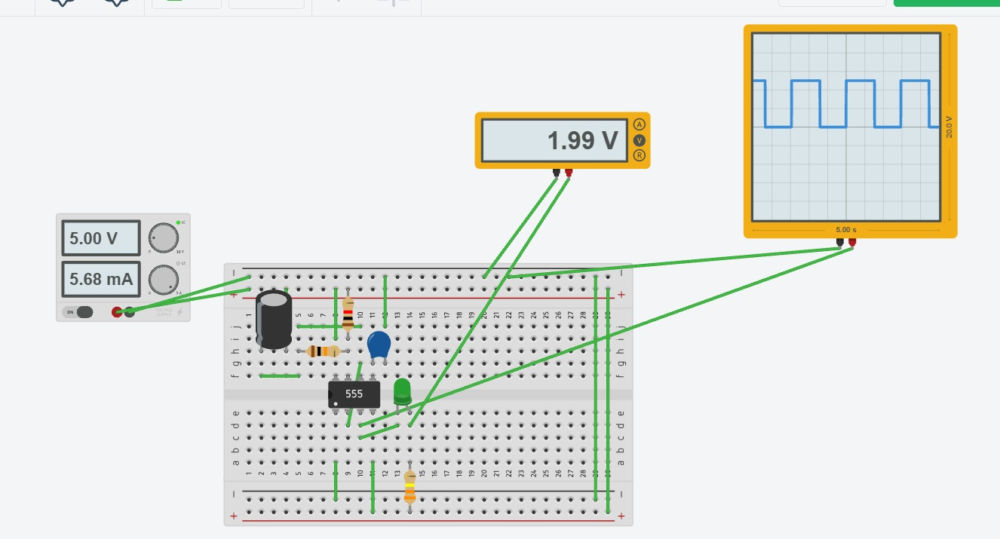

Reporte de Práctica: Circuito Temporizador 555 en Modo Astable
Universidad Iberoamericana Puebla
Materia: Introducción a la Mecatrónica
Tema: Electrónica básica y medición — Temporizador 555: astable
1. Metas y Propósitos de la Práctica
Objetivo General
Construir un oscilador que haga parpadear un LED, calcular su frecuencia y duty cycle teóricos, medirlos y comparar los resultados obtenidos.
Objetivos Específicos
- Calcular por medio de fórmulas el tiempo que el circuito permanece encendido y apagado, junto con su frecuencia y ciclo de trabajo.
- Realizar el montaje físico del circuito en la protoboard empleando el circuito integrado 555, los capacitores, las resistencias y el LED.
- Medir de forma práctica los valores reales de voltaje, corriente, frecuencia y ciclo de trabajo utilizando el multímetro y el osciloscopio.
- Contrastar los resultados teóricos frente a los experimentales para obtener el porcentaje de error y analizar sus causas.
2. Componentes y Materiales Utilizados
| Cantidad | Componente / Material |
|---|---|
| 1x | Circuito Integrado NE555 (DIP-8) |
| 1x | LED (Diodo Emisor de Luz) |
| 1x | Resistor para LED (\(330\ \Omega\) o \(470\ \Omega\)) |
| 2x | Resistores temporizadores: \(R_A = 1\ \text{k}\Omega\), \(R_B = 10\ \text{k}\Omega\) |
| 1x | Capacitor de temporización: \(C = 100\ \mu\text{F}\) (electrolítico) / \(100\ \text{nF}\) (cerámico) |
| 1x | Capacitor \(10\ \text{nF}\) para pin 5 (CTRL) \(\rightarrow\) estabilidad |
| — | Protoboard, cables de conexión, fuente \(5\ \text{V}\) regulada |
3. Diseño: Fórmulas del Astable
En modo astable, el capacitor \(C\) se carga a través de \(R_A + R_B\) y se descarga a través de \(R_B\):
-
Tiempo en Nivel Alto (\(t_{\text{ALTO}}\)): $\(t_{\text{ALTO}} = 0.693 \cdot (R_A + R_B) \cdot C\)$
-
Tiempo en Nivel Bajo (\(t_{\text{BAJO}}\)): $\(t_{\text{BAJO}} = 0.693 \cdot R_B \cdot C\)$
-
Periodo Total (\(T\)): $\(T = t_{\text{ALTO}} + t_{\text{BAJO}} = 0.693 \cdot (R_A + 2R_B) \cdot C\)$
-
Frecuencia de Oscilación (\(f\)): $\(f = \frac{1}{T} = \frac{1.44}{(R_A + 2R_B) \cdot C}\)$
-
Ciclo de Trabajo (Duty Cycle): $\(\text{Duty} = \frac{t_{\text{ALTO}}}{T} = \frac{R_A + R_B}{R_A + 2R_B} \times 100\%\)$
Sustitución y Cálculos Teóricos
Datos: \(R_A = 1\ \text{k}\Omega\), \(R_B = 10\ \text{k}\Omega\), \(C = 100\ \mu\text{F}\)
-
Voltaje de salida en ALTO:
$\(V_{OH} \approx V_{CC} - 1.5\ \text{V} = 5.0 - 1.5 = 3.5\ \text{V}\)$ -
Corriente estimada del LED:
$\(I_{\text{LED}} = \frac{V_{OH} - V_f}{R_{\text{LED}}} = \frac{3.5 - 1.8}{330} \approx 5.15\ \text{mA}\)$
4. Registro de Mediciones y Comparativa
| Magnitud | Teórico (calculado) | Medido | % de error | ¿Con qué lo mediste? |
|---|---|---|---|---|
| \(V_{CC}\) (V) | \(5.0\ \text{V}\) | \(5.060\ \text{V}\) | \(1.20\%\) | Multímetro (V, en paralelo) |
| V de salida en ALTO (V) | \(\approx 3.5\ \text{V}\) | \(0.448\ \text{V}\) | \(87.20\%\) | Multímetro / osciloscopio |
| Frecuencia (Hz) | \(0.69\ \text{Hz}\) | \(0.6866\ \text{Hz}\) | \(0.49\%\) | Osciloscopio / DMM con Hz |
| Duty (%) | \(52.49\%\) | \(1.08\%\) | \(73.82\%\) | Osciloscopio (Measure) |
| I del LED (mA) | \(\approx 5.15\ \text{mA}\) | \(1.574\ \text{mA}\) | \(69.44\%\) | Multímetro (A, en serie) |
Fórmula de error utilizada:
$\(\%\ \text{Error} = \left| \frac{\text{Teórico} - \text{Medido}}{\text{Teórico}} \right| \times 100\)$
5. Análisis de Variaciones
-
Ciclo de Trabajo (Duty Cycle):
La diferencia entre el valor calculado y el medido se debe a que los capacitores electrolíticos tienen una tolerancia de fabricación amplia. Esto significa que su capacidad real de almacenamiento varía respecto al valor nominal impreso, modificando los tiempos de carga y descarga del oscilador. -
Voltaje de Salida en Nivel Alto:
La caída en el voltaje medido en el Pin 3 ocurre debido a la resistencia interna propia de la etapa de salida del circuito integrado 555 cuando se le conecta una carga externa, lo que reduce la tensión máxima entregada. -
Intensidad de Corriente del LED:
La reducción en la corriente medida que pasa por el diodo LED es una consecuencia directa de la menor tensión entregada en la salida del circuito integrado, ya que al haber menos voltaje disponible, fluye una menor cantidad de corriente a través de la resistencia limitadora.
6. Bitácora de Errores
| a. Qué falló | b. Cómo lo encontraste | c. Cómo lo resolviste |
|---|---|---|
| Ninguna falla; el circuito operó de manera adecuada desde la primera conexión a la fuente de alimentación. | Mediante la inspección visual del montaje físico y la verificación de las ondas mostradas en los instrumentos. | No fue necesario realizar ajustes, ya que el diseño y el armado sobre la protoboard fueron correctos desde el inicio. |
7. Conclusiones
Se completó con éxito el armado del circuito oscilador astable con el temporizador 555 para el parpadeo del LED, logrando determinar y comprobar experimentalmente su frecuencia y ciclo de trabajo. A través del análisis se evidenció que las variaciones numéricas en parámetros específicos como el duty, el voltaje alto y la corriente se deben principalmente a las tolerancias físicas de los componentes pasivos y a la caída de tensión interna que experimenta el dispositivo al alimentar elementos externos.
8. Evidencias de Entrega (Portafolio)
- Esquemáticos anotados: Diagrama del circuito con valores de \(R_A\), \(R_B\) y \(C\) explícitos.
- Fotos del montaje: Evidencia fotográfica de la implementación física sobre la protoboard.
- Tablas de medición: Completas con el porcentaje de error y la explicación analítica correspondiente.
- Mini-video (\(\le 60\ \text{s}\)): Grabación mostrando la señal en el osciloscopio y el funcionamiento del LED, respaldada mediante enlace multimedia en el documento.
- Bitácora de errores: Documentada formalmente en la Sección 6 del presente reporte.



Se uso IA para darle formato a la pagina y un tono mas formal a las respuestas